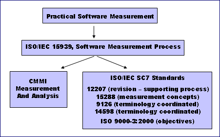

| Guideline: PSM and ISO/IEC 15939 |
 |
|
Order ISO/IEC 15939:2007 (Revises ISO/IEC 15939:2002) PSM and ISO/IEC 15939Practical Software and Systems Measurement (PSM) served as the base document for the development of ISO/IEC 15939. PSM provides additional details on the activities and tasks presented in ISO/IEC 15939, and provides detailed steps to successfully meet these tasks. In addition, PSM provides detailed "how-to" guidance including sample measures, lessons learned, case studies, and implementation guidance. PSM provides a set of sample measures, using the measurement information model terminology. Both products are coordinated to provide users with a consistent framework for implementing a measurement program.  In addition, the purpose and outcomes of the measurement process from ISO/IEC 15939 have been added to the revision to ISO/IEC 12207, Software Life Cycle Processes, within a new supporting process, entitled Measurement. Measurement concepts have also been added to ISO/IEC 15288, System Life Cycle Processes. The new measurement terminology has also been coordinated with the revisions to ISO/IEC 9126, Software Product Quality, and IOS/IEC 14598, Evaluation of Software Products, so that all these standards will use a common set of measurement terminology, once the revisions are complete. In addition, the purpose and outcomes of the measurement process have been added to ISO 9000-3: Application of ISO 9001:2000 to Software. The draft international standard ISO/IEC 15393 in turn was used as an input to the Measurement and Analysis (MA) process area of the CMMIsm. The MA process area provides a methodology for assessing whether a project's measurement program is compliant with the international standard, in addition to providing relevant information on CMMI-based process improvement activities. Overall, the CMMI helps organizations to institutionalize their measurement and analysis activities, rather than addressing measurement as a secondary function. In the MA process area, the activities of "Plan Measurement" and "Perform Measurement" are detailed in two specific goals that must be implemented and eight specific practices that are considered important in achieving the associated specific goals. The activities of "Evaluate Measurement" and "Establish and Sustain Commitment" are considered through the generic goals, with elaborations specific to the MA process area. The coordination of these documents means that the software and systems engineering communities have a consistent set of information-driven standards and guidance for implementing project and process measurement. |
Copyright © 2001–2007 Practical Software & Systems Measurement (PSM). |